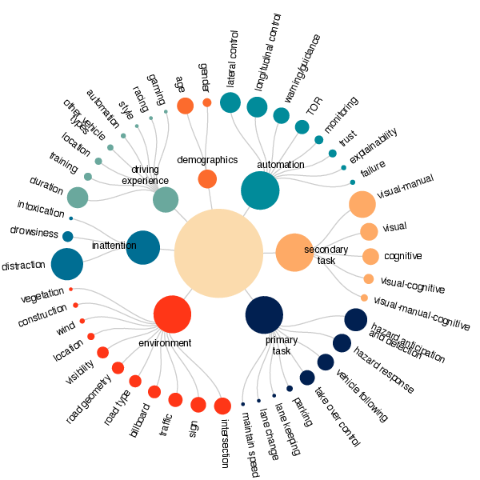
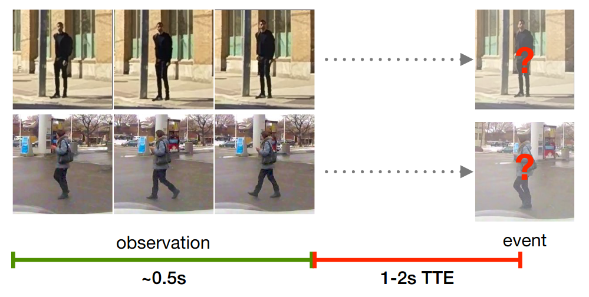
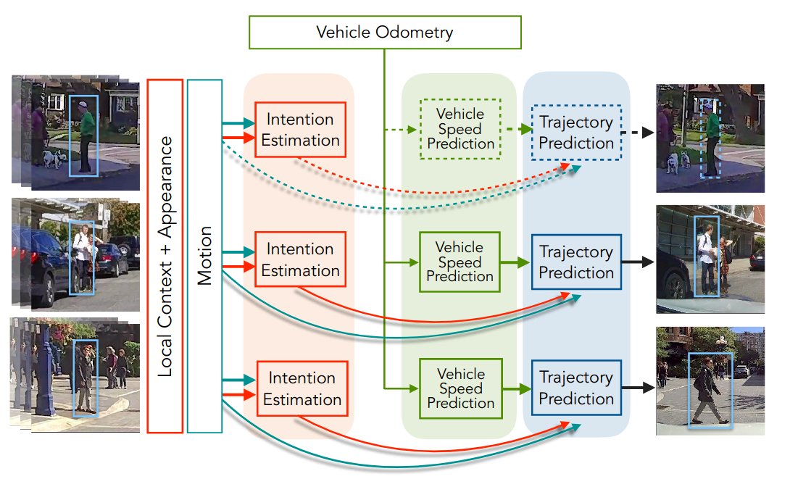
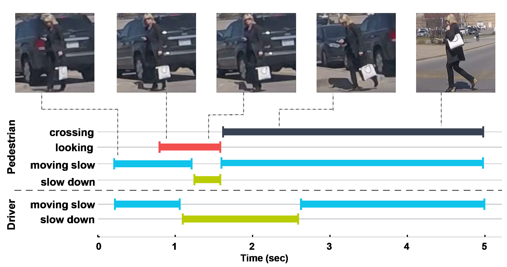
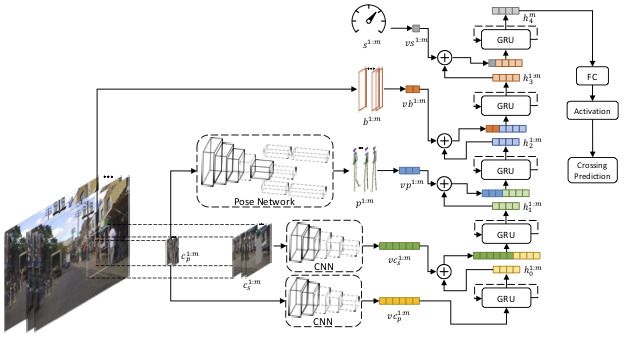
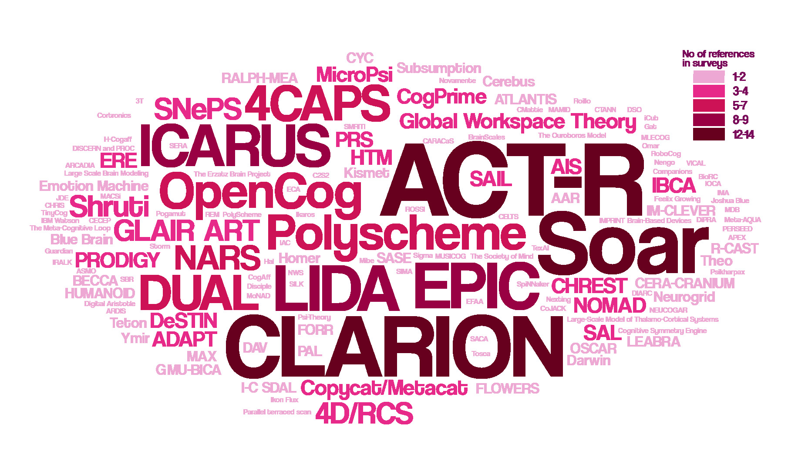
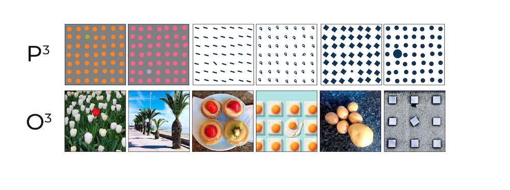
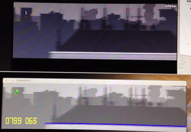

Driving and Attention
A report and curated database of >400 papers (since 2010) on all aspects of attention during driving. We focus on studies where human gaze was recorded and analyzed. We first give an overview of human gaze, pros and cons of using it as a proxy for attention, and procedures for recording data. We then review behavioral research on drivers' attention and identified multiple factors, external and internal, that affect gaze allocation. The second half of the report is dedicated to analytical models of attention and various practical solutions that rely on drivers' gaze.
[Report][Database]

Pedestrian Action Benchmark
This is the first benchmark of the pedestrian action prediction algorithms that ranks a number of baselines and state-of-the-art approaches using two public datasets for studying pedestrian behavior in traffic: JAAD and PIE. We analyze the performance of the evaluated models with respect to various properties of the data and based on the analysis propose a new model, PCPA, that combines explicit and implicit features via temporal and modality attention mechanisms and demonstrates state-of-the-art results.
[Paper][Code]

Pedestrian Intention Estimation
Pedestrian intention is an early predictor of their future action. For example, pedestrian may be standing at the intersection waiting for the safe moment to cross or may be engaged in conversation or waiting for a cab. To study these behaviors, we collected a publicly available dataset with a variety of traffic scenarios and conducted a large-scale human experiment to gather human reference data for pedestrian intention. We also show that trajectory estimation can be improved by adding pedestrian intention to other context features.
[PIE Dataset][Paper][Code]

Driver-Pedestrian Interaction
Before safely deploying autonomous vehicles many challenges still have to be resolved. One of them is the interaction with vulnerable road users such as pedestrians, particularly at the point of crossing. We collected a large-scale naturalistic dataset and used it to conduct a number of studies to investigate how human drivers interact and resolve potential road conflicts with pedestrians.
[JAAD Dataset][Paper]

Pedestrian Action Anticipation
We propose a novel stacked RNN architecture SF-GRU for pedestrian crossing action prediction. In this network multimodal sources of information are gradually fused at different levels of processing. We show how length of observation, time to event, type and order of fusion affects the performance of the model.
[Paper][Code]

40 Years of Cognitive Architectures
We summarized and catalogued various approaches to cognitive architecture design from multiple disciplines spanning areas from engineering to neuroscience. This resulted in a large-scale survey of 84 cognitive architectures developed in the past 40 years. We also assessed the practical viability of these approaches by aggregating information on over 900 practical applications that were implemented using the cognitive architectures in our list.
[Project page][Paper][Data]

Do Saliency Models Detect Odd-One-Out Targets?
We evaluate the behavior of 20 saliency models on two new datasets: synthetic psychophysical images (P3) and natural odd-one-out images (O3). We show that majority of the models cannot discriminate targets that differ by color, orientation and size, which are the features that strongly guide human attention.
[P3 and O3 datasets][Paper][Supplementary Material][Code]

Saccade Generator for Static Images
Modeling human fixations on images is a large subfield of visual attention. The focus of many computational saliency models is on generating saliency maps which highlight areas that are more likely to attract human attention. However, most practical applications require a sequence of fixations rather than areas of interest. To address this issue, we developed a flexible and customizable framework for direct saccade sequence generation.
[Code][Paper]

Video game playing
For my M.Sc. thesis I developed an algorithm to play browser video games of endless runner genre, such as Canabalt and Robot Unicorn Attack, in real time and using only visual input. The goal of this project was to implement a set of attentional mechanisms and visual processing pipeline to test the biologically-inspired concept of Cognitive Programs on a complex dynamic visual task.
[Paper]

{kind=link}
{kind=link}
{kind=link}
{kind=link}
{kind=link}
{kind=link}